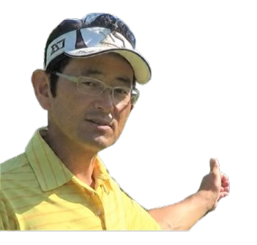

789P38 THEORY / 100切り診断
ティーからカップまでの1ホール。○が基準クリア、×が未達です。上のスライダーを動かすと、この図がその場で変わります。扇形の広がり、弾道の長さ、グリーン上の円の大きさは入力した数字に連動します。38パット以内ならグリーン全体が円で埋まり、パットが増えるほど円は小さくなります。基準を満たすと扇形がコース内に収まり、弾道がグリーンに乗ります。届いていないと扇形がコースからはみ出し、弾道はグリーン手前で落ちます。
100切りの可能性
100切りまで
いちばん効くのは
—
同じ技術でも、日によってこれだけ振れます。
平均スコア
789P38 基準との差
4000ラウンドから1枚引いたものです。同じ技術でも、日によってこれだけ変わります。
縦線が789P38理論の基準値です。
その1区間だけを基準まで引き上げた場合の短縮打数。

野山佳治
ゴルフ ティーチングプロ
診断で弱点が分かったら、コースで実際にどのようにプレーしたらいいかをラウンドレッスンにてお伝えいたします。是非ご参加ください。